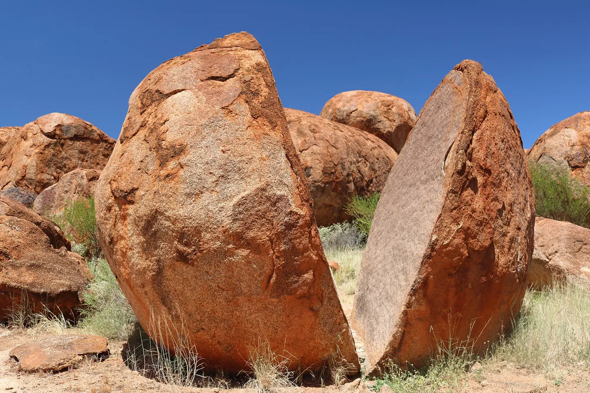
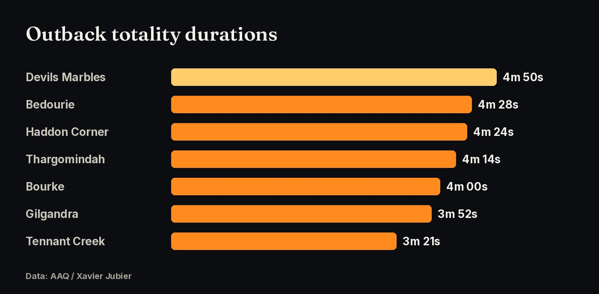
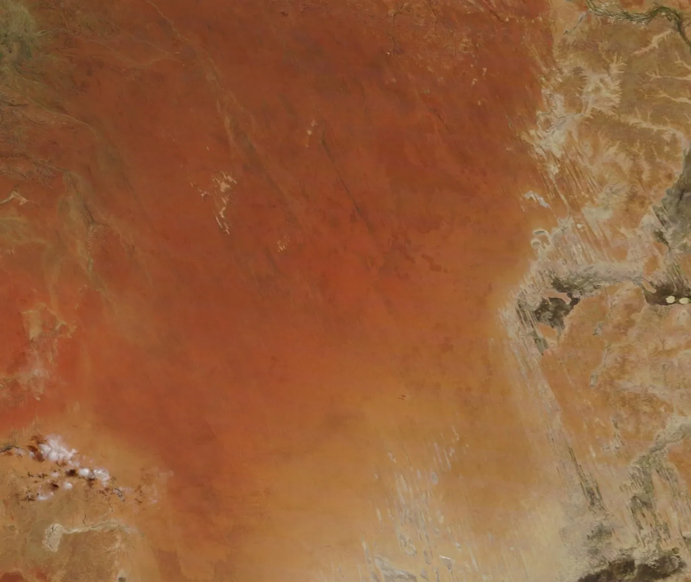
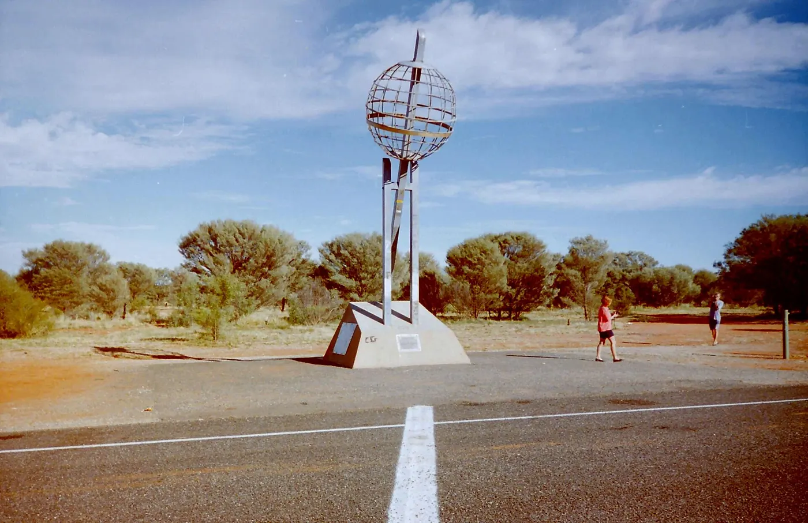
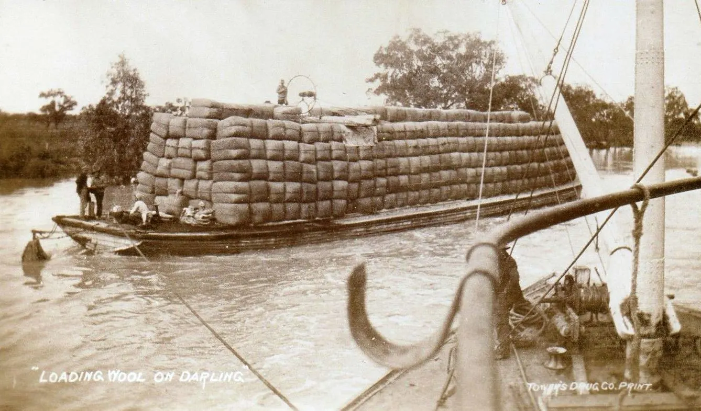

Long totalities, dry winter skies and big horizons from the Stuart Highway to Bourke.

After the Kimberley, the path crosses the Northern Territory, south-west Queensland and outback New South Wales, with long totalities the whole way. The Stuart Highway crosses the centreline near Karlu Karlu / Devils Marbles.
| Location | Totality begins | Totality | Sun alt. |
|---|---|---|---|
| Devils Marbles / Stuart Hwy centreline, NT | 12:48:25 pm ACST | 4m 50s | 49° |
| Tennant Creek, NT | 12:47:53 pm ACST | 3m 21s | 50° |
| Bedourie, QLD | 1:33:59 pm AEST | 4m 28s | 44° |
| Haddon Corner, QLD | 1:38:26 pm AEST | 4m 24s | 42° |
| Thargomindah, QLD | 1:45:14 pm AEST | 4m 14s | 38° |
| Bourke, NSW | 1:50:06 pm AEST | 4m 00s | 35° |
| Gilgandra, NSW | 1:55:11 pm AEST | 3m 52s | 32° |
Note: Alice Springs is outside the path and gets only a 95% partial eclipse. Drive north to the centreline.

Sources: AAQ (Xavier Jubier data)
July is winter and the dry season across inland Australia. AAQ’s weather summary, based on Jay Anderson’s 18-year satellite cloud climatology, puts the best odds in north-west Australia, with good prospects across central Australia and into western New South Wales. Cloud becomes more likely toward the east coast. We haven’t found a published per-town clear-sky percentage for the Outback sites, so check eclipsophile.com and the Bureau of Meteorology closer to the date.

Sources: AAQ (Xavier Jubier data); Jay Anderson, eclipsophile.com.
Stuart Highway (NT): fly into Alice Springs or Darwin and drive to the Devils Marbles area, where the highway meets the centreline. Channel Country (QLD): Bedourie, Haddon Corner and Thargomindah all have more than 4 minutes, but it is remote country. Outback NSW: Bourke and Gilgandra are reachable on sealed roads from Sydney and Dubbo. AAQ suggests choosing a road that runs along the path, so you can move with the forecast, and carrying enough fuel, food and water for contingencies.


Sources: AAQ (Xavier Jubier data)
Use ISO 12312-2 eclipse glasses for every partial phase, and take them off only during totality. Outback winter mornings are cold, so bring layers.
Sources: AAQ (Xavier Jubier data)
Click any point on the path map for exact totality times, and vote for where the community gathers.